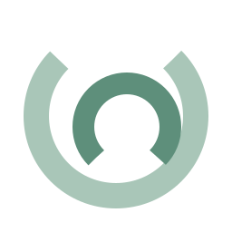

Teléfono de Matías
Tutora: Camila Rojas

Tutora: Camila Rojas
PERMISOS DEL TELÉFONO
Tres accesos base para que la guardia funcione sin leer contenidos. La accesibilidad es opcional.
Minutos y horarios por aplicación.
Convierte avisos en conteos y señales. El texto se descarta en el teléfono.
Para que el análisis siga en segundo plano.
Solo registra qué app está en primer plano. No lee textos, contraseñas ni contenido de la pantalla.
Última sincronización hace 9 min
QUÉ SE COMPARTE
Sin texto, sin fotos, sin contactos en claro. El tutor recibe señales, no conversaciones.